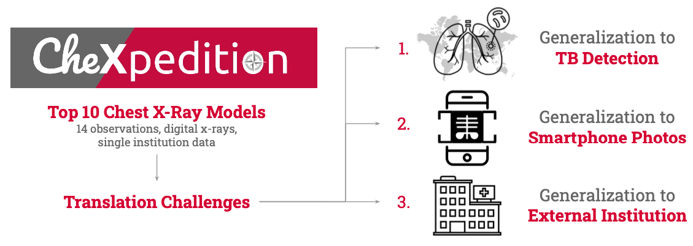
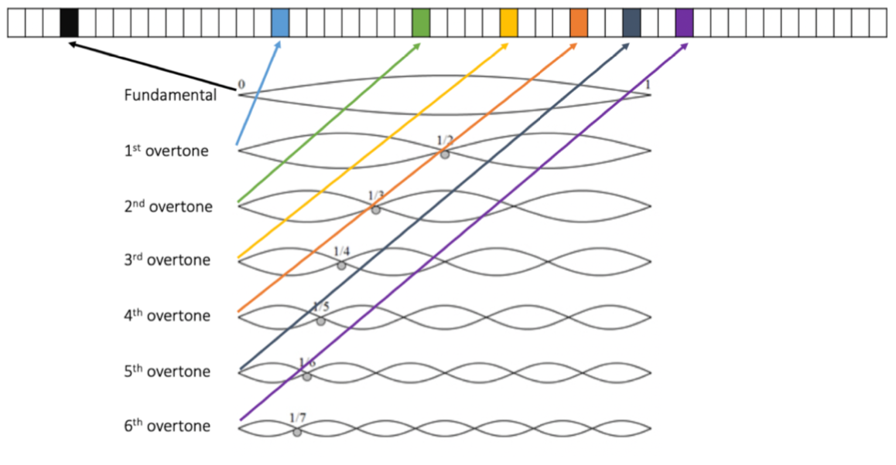

CheXpedition
Pranav Rajpurkar, Anirudh Joshi, Anuj Pareek, Phil Chen, Amirhossein Kiani, Jeremy Irvin, Andrew Ng, Matthew Lungren

Although there have been several recent advances in the applica- tion of deep learning algorithms to chest x-ray interpretation, we identify three major challenges for the translation of chest x-ray al- gorithms to the clinical setting. We examine the performance of the top 10 performing models on the CheXpert challenge leaderboard on three tasks: (1) TB detection, (2) pathology detection on photos of chest x-rays, and (3) pathology detection on data from an exter- nal institution. First, we find that the top 10 chest x-ray models on the CheXpert competition achieve an average AUC of 0.851 on the task of detecting TB on two public TB datasets without fine-tuning or including the TB labels in training data. Second, we find that the average performance of the models on photos of x-rays (AUC = 0.916) is similar to their performance on the original chest x-ray images (AUC = 0.924). Third, we find that the models tested on an external dataset either perform comparably to or exceed the aver- age performance of radiologists. We believe that our investigation will inform rapid translation of deep learning algorithms to safe and effective clinical decision support tools that can be validated prospectively with large impact studies and clinical trials.
Paper
Clustering Phenomena in Dropout
David Kewei Lin, Jensen Jinhui Wang, Phil Chen

Despite its prevalence, Dropout lacks a conclusive explanation behind its regularization effects. In this project, we verify that applying Dropout is akin to training a stochastic neural network. We then analyze the variance across models to quantify the regularization properties of Dropout and explain the observed trends from the stochastic perspective. Subsequently, we propose that the network produces similar nodes to adapt to the stochastic training process, resulting in a clustering phenomenon that reduces model complexity. Our experiments culminate in a compression scheme that converts the trained stochastic network into a smaller, deterministic network for prediction.
Paper
Poster [Best poster award, CS 229 Spr 2019]
Video
Note2Vec
Phil Chen and Edward Xu

Between music and natural language, individual musical notes are analogous to characters and chords analogous to words, but the distinction between notes and chords is much more blurred. Here, we use domain knowledge represent musical note vectors as superpositions of harmonics, and chords as sums of their constituent notes, thus enabling efficient and effective representations of musical chords. We evaluate these vector embeddings on simple music theory tasks and demonstrate that these embeddings capture fundamental properties that are meaningful in music theory.
Paper
Poster
Github
Trigger Warning
Phil Chen, Allan Shilun Li, David Kewei Lin, Jensen Jinhui Wang

Ever accidentally offended someone or been unintentionally offended? Here's a self-updating NLP-based system to identify (and discourage) inflammatory content. There are three components to this project: The first is a data processing pipeline that downloads Tweets from the online database of Tweets, passes the Tweets through sentiment analysis software (Google and Microsoft APIs), and scores each Tweet based on the "consensus sentiment" among its replies and quotes. The second is a hybrid RNN/CNN-based model that predicts how likely a post is to elicit a negative response. We use the data processing pipeline to train the model. The third is a Chrome extension that uses the model created in the second component to recommend users to reconsider their comments or posts if the model detects a very inflammatory post.
Github
Ultimate Tic-Tac-Toe Agents
Phil Chen, Edward Xu, Jesse Doan

Ultimate tic-tac-toe is a two-player game involving a 9x9 game board that is actually composed of nine "mini-boards" of regular 3x3 tic-tac-toe boards. Using Minimax, Monte Carlo Tree Search, and a Deep Q-Learning Network as our methods, we simulated batches of games in a round-robin tournament with each of these agents, as well as a hybrid agent and a random agent. Using the Elo rating system to standardize the results, we found that Minimax was generally the strongest agent while Monte Carlo Tree Search performed the best against the random agent. Our results demonstrate how important it is for the design of an algorithmic agent to match its task. Both Monte Carlo Tree Search and Deep Q-learning Network are extremely powerful methods that could not perform as well as a simple Minimax program due to the rigid structure of Ultimate Tic-Tac-Toe.
Paper
Poster
Github
Oral Glucose Tolerance Test Analyzer
Phil Chen, Joon Ha, Arthur Sherman

The oral glucose tolerance test (OGTT) is a quantitative tests for measuring a patient's state of diabetes progression. Often used as conformation for qualitative results, the OGTT actually contains much more information and has the potential to aid predictive tools for physicians. In this project, we use a physiology-based quantitative model of glucose and insulin dynamics in the body to analyze OGTTs. First, we derive physiological parameters such as the insulin sensitivity index. Second, we propose a method to compare longitudinal studies to predict the future trajectory of a patient's diabetes progression. Through this, we demonstrate how a quantitative model based in physiological can be used for end-to-end training and prediction.
Poster